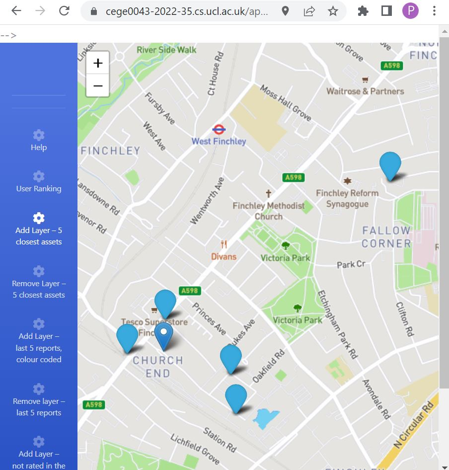
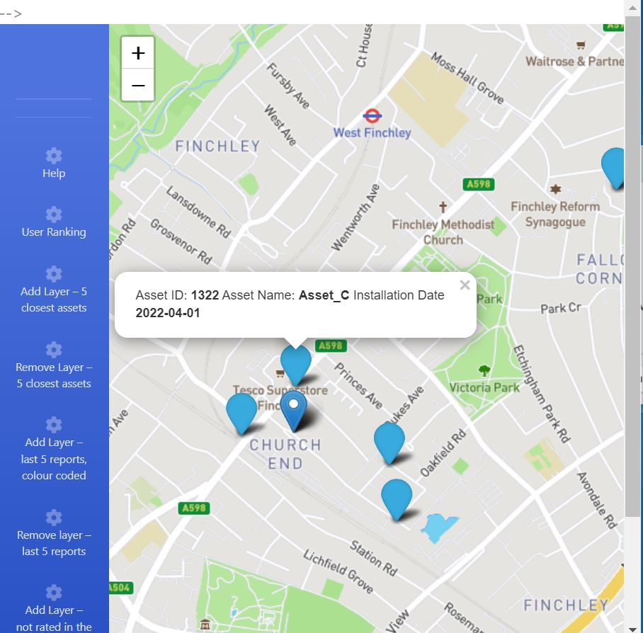
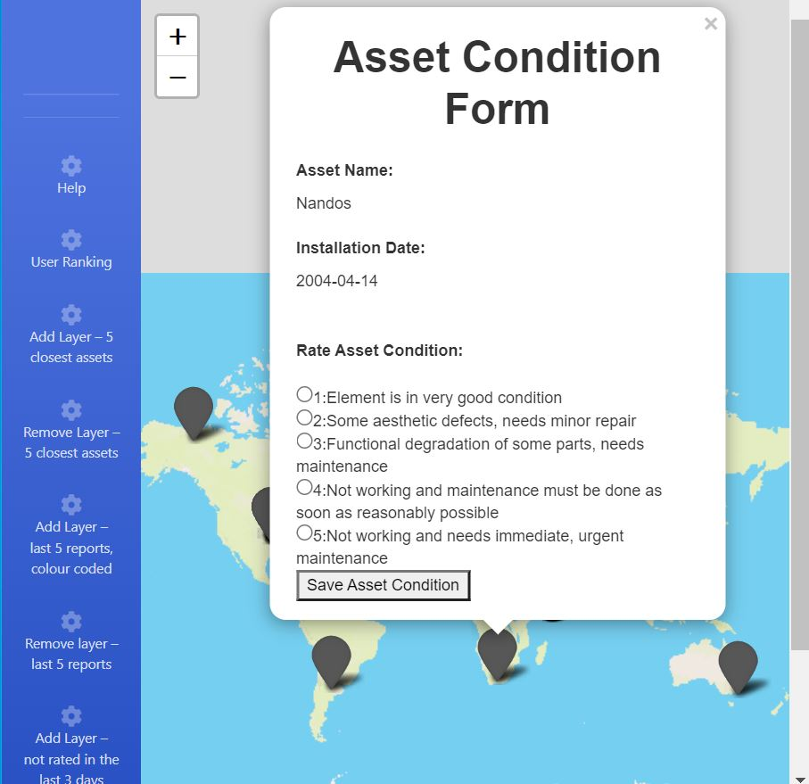

Demonstration of how different menus work
To go back app --> CLICK HERE
User Rank
-- It returns the user Ranking calculated by counting the number of reports they have submitted in comparision to other users.
-- It adds the five closest assets on the map that is closest to the user based on their current location.
-- User can click on the closest assests points added on the map so get asset information.
 -- It adds the last five condition report submitted by the user on the map.
-- The assets are given color based on their condition description.
-- Additionally, the user can see the assets condition by clicking on it
-- This menu adds the assets on the map which were not rated in the last 3 days.
-- The user can rate those assets by clicking on the asset point and form will appear.

-- Add Layer- 5 closest assets
-- Add Layer- Last 5 reports, colour coded
-- Remove Layer- not rated in the last 3days
-- These menu are used to remove the layer added.
-- After the layer is removed, the screen is set back to default.